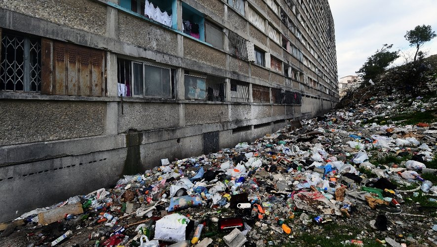

Marseille est officiellement la nouvelle capitale française

Cette jolie bourgade, encore peu connue des Français, vient d'être annoncée capitale de notre belle patrie.

Loin d'être touchée par la pollution, ce trésor des amoureux de la nature a enfin été élue bourgade préférée des Français.